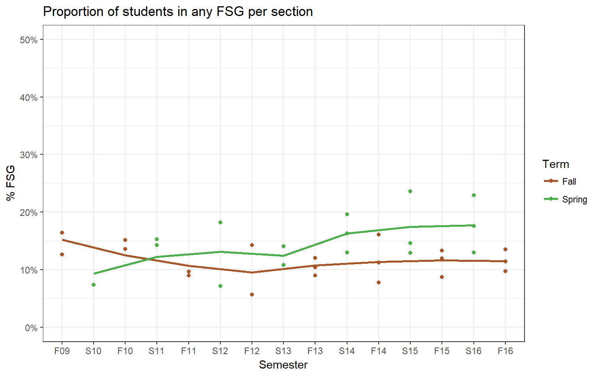

Historical Trends in Students taking Chem 111
This section analyses the trends in characteristics of the student group who is taking Chemistry 111, and compares them to the campus level averages for all freshman.
We consider data from Fall 2009 - Fall 2016, for all sections of Chemistry 111. Students withdrawing or receving an incomplete (W/I) are exluded from this analysis. A repeatable grade is defined as a student reciving a D, D+, or F grades, or an unexcused withdrawl WU.
Course Characteristics
Enrollment

Spring term demand has steadily increased since 2009.
Class size
Fall class sizes have remained relativley constant between 140-160 since 2009, even with an additional section starting in 2013.
GPA
The average class-level gpa across years is 1.91, with standard deviation 0.27.
Spring and Fall semesters have different patterns of oscilating increase and decrease of class-level GPA.
DFW rate
As expected we see a similar pattern, slightly different between Fall and Spring, for the number and % of student receiving a repeatable grade (D/F/WU).
Student Characteristics
Demographics
Gender
Campus has a seen a steady rate of slightly higher than 50% female students for the past 7 years.
Age
The black horizonal line represents the median age of freshman across campus, with vertical lines spanning the youngest 10% to the oldest 90% of ages for freshman that term. Students taking Chemistry are on average older than most freshman this is expected because there are a proportion of second year students taking Chemistry that will increase the average age of the class.
Students taking Chemistry in the fall are on average younger than those taking chemistry in the Spring. The obvious exception is this past Spring 2016 seems to be an unusually young cohort for spring. Recall this is age at admission, not the age when the student is taking Chem 111.
Area Where a Student is From
Citizenship
Students who are recieving services from DSS
EOP Status
REACH

Any formal student group (fsg)

Race Code

URM

SOC

Pre-enrollment Information
Admission Index
| section | F09 | S10 | F10 | S11 | F11 | S12 | F12 |
|---|---|---|---|---|---|---|---|
| 1 | 3.71 (0.42) | 3.73 (0.4) | 3.67 (0.4) | 3.75 (0.41) | 3.73 (0.39) | 3.66 (0.4) | 3.7 (0.4) |
| 9 | 3.62 (0.4) | 3.73 (0.37) | 3.63 (0.4) | 3.69 (0.41) | |||
| 6 | 3.66 (0.37) | 3.71 (0.41) |
| section | S13 | F13 | S14 | F14 | S15 | F15 | S16 |
|---|---|---|---|---|---|---|---|
| 1 | 3.75 (0.36) | 3.69 (0.36) | 3.69 (0.38) | 3.74 (0.37) | 3.72 (0.37) | 3.74 (0.38) | 3.69 (0.32) |
| 9 | 3.66 (0.36) | 3.69 (0.37) | 3.7 (0.37) | 3.75 (0.38) | 3.65 (0.4) | 3.77 (0.34) | 3.69 (0.33) |
| 17 | 3.67 (0.39) | 3.74 (0.38) | 3.76 (0.37) | 3.72 (0.3) | 3.7 (0.37) | 3.79 (0.3) |
Tests and Benchmarks
GE-Breadth Course Completion Status

ELM
EPT
College prep

| Engl | Math | Lab Sci | |
|---|---|---|---|
| F09 | 7 (2.75) | 7.06 (3.13) | 5.4 (2.63) |
| S10 | 6.83 (2.95) | 6.9 (3.38) | 5.31 (2.72) |
| F10 | 7.21 (2.6) | 7.37 (3.09) | 5.78 (2.71) |
| S11 | 6.81 (2.93) | 7.2 (3.39) | 5.2 (2.71) |
| F11 | 6.99 (2.75) | 7.03 (3.25) | 5.57 (2.77) |
| S12 | 6.77 (2.92) | 6.95 (3.38) | 5.34 (2.75) |
| F12 | 7.2 (2.57) | 7.24 (2.91) | 5.95 (2.68) |
| S13 | 6.71 (3.03) | 7 (3.45) | 5.31 (2.83) |
| F13 | 7.13 (2.62) | 7.25 (3.02) | 5.99 (2.76) |
| S14 | 6.78 (2.93) | 6.96 (3.37) | 5.46 (2.82) |
| F14 | 6.99 (2.82) | 7.23 (3.29) | 5.9 (2.92) |
| S15 | 6.65 (3.14) | 6.98 (3.6) | 5.38 (2.91) |
| F15 | 7.05 (2.75) | 7.61 (3.32) | 6.02 (2.91) |
| S16 | 7.06 (2.77) | 7.43 (3.22) | 5.86 (2.77) |
| F16 | 7.05 (2.72) | 7.46 (3.21) | 6.08 (2.86) |
Academic Standing
College
Student Level
Units taken this semester

| section | F09 | S10 | F10 | S11 | F11 | S12 | F12 |
|---|---|---|---|---|---|---|---|
| 1 | 12.04 (2.09) | 12.62 (2.32) | 12.41 (2.17) | 12.45 (2.32) | 12.8 (1.87) | 12.1 (2.07) | 12.51 (1.72) |
| 9 | 12.43 (2.08) | 12.24 (2.02) | 12.15 (2.51) | 12.43 (1.88) | |||
| 6 | 12.81 (2.14) | 12.66 (2.09) |
| section | S13 | F13 | S14 | F14 | S15 | F15 | S16 |
|---|---|---|---|---|---|---|---|
| 1 | 12.36 (1.95) | 12.18 (2.03) | 12.42 (1.92) | 12.22 (2.03) | 12.56 (2.29) | 12.51 (1.87) | 12.94 (2.15) |
| 9 | 12.27 (1.9) | 12.45 (1.77) | 12.5 (1.81) | 12.59 (2.22) | 12.67 (2.18) | 12.49 (1.9) | 12.67 (1.94) |
| 17 | 12.49 (1.78) | 12.41 (2.01) | 12.45 (1.78) | 12.69 (2.14) | 12.35 (1.98) | 12.94 (1.73) |